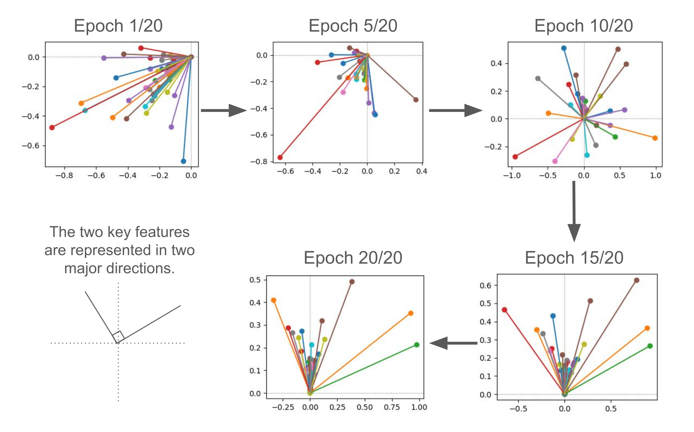

Welcome to my AI safety project#
TL;DR: My project replicated the research findings of Anthropic’s Toy Model (Elhage et al., 2022) and the Sparse Autoencoder (Bricken et al., 2023) using a single-layer linear model with ReLU filtering, trained on the MNIST handwritten digit dataset (Exp1-2). Building on these replications, I introduced a novel interpretability technique, which makes the model’s internal representations more transparent and easier for humans to understand (Exp3). Codes were provided for each Exp. You can directly jump into the project summary here.
About my AI safety project
During Oct 2024 - Feb 2025,
I participated in the AI Safety Fundamentals (AISF) program, organised by the BlueDot Impact.
I particularly took the Alignment course (https://aisafetyfundamentals.com/alignment/).
This course was composed of two phases: (1) the learning phase, and (2) the project phase.
(1) The learning phase was helpful for building fundamental knowledge in AI Safety (e.g. addressing AI risks and misalignment, RLHF, Scalable oversight, AI model robustness, Mechanistic Interpretability, model risks/capabilities evaluations), developing further research questions and deeply mentally engaging in this field during periods of 8 weeks.
(2) The project phase provided invaluable opportunities to tackle own research questions during periods of 4 weeks (I finished 3 experiments in 3 weeks and 1 week for writing).
My initial goal of this project was to create an interactive project like this youtube clip so that people visiting my project enjoy playing like a mini game, but it was too ambitious to complete. Instead, I made my project simple replications of Anthropic work with toy models and real image dataset with provided codes so that visitors can implement ones by themselves. Also, I maintained running my exps requiring only personal computer power (2024 PC/laptop), not needing a big cloud computing or GPUs so that hopefully people can run my exps locally!
To be noted, my exps are still not perfect because this is still my initial draft. I expect there would be many hassles visitors may encounter while running. I believe, learning something well is through making your own hands dirty! So, I recommend not only reading my project summary, but also running provided codes, experimenting with different settings, and thinking about new research settings and revised code implementations!
This way, I am hoping that new AI safety researchers, engineers, practitioners or curious active visitors can have some hands-on experience on a specific AI safety topic.
Of course, there is no problem to just read my project summary to get a high level gist of my project’s finding and think through future directions or wider applications.
If you can leave some feedback, inspirations, interesting ideas regard to my project, I would love to hear!
My contacts
X/Twitter: https://x.com/htsujimura
Bluesky: https://bsky.app/profile/htsujimura.bsky.social
Linkedin: https://www.linkedin.com/in/hikaru-tsujimura/
Project summary
Introduction
For non-technical people, click and read hidden texts here for backgrounds to get familiar with minimum knowledge for the Mechanistic Interpretability method
Without a doubt, the 2020s is the decade we, humans, have started concerning serious threats of AI risks and AI’s expanding capabilities replacing human labors across a wide range of occupations (see an overview of concerned AI risks on my linkedin post).
Raising more attentions to this concern, researchers have continuously discovered that the state of art (SOTA) large language models (LLMs, like the ChatGPT) or simpler machine learning models/AI systems are already capable of demonstrating concerning behaviors (e.g. showing deceiving behaviors to pretend to follow human instructions, hiding true intentions, power acquisition). If AIs continue to expand their capabilities at this pace with hidden thoughts, especially secretly holding vicious attitudes towards humanity existence, humans will be wrecked in the future once super-human AIs are ready for breaking out of human controls.
To mitigate our existential risks and also make internal minds of advanced AIs more transparent and predict thier subsequent behaviors, the Mechanistic Interpretability (Mech Interp), a ground-breaking novel interpretability approach has been proposed (Olah, et al., 2020).
A primary goal of the Mech Interp method is to decompose internal complex neural activities of models into more interpretable components of neural activity patterns or representations (e.g. ideally interpretable if one neuron activation frequently corresponds to a curve-shape in an image, then the neuron is assumed to be a curve-detector neuron).
The minimum interpretable component is called as “features”, akin to a chemical element in the periodic table (e.g. C or Carbon), responsible for a simpler distinct information, such as a particular angle of a curve-shape, while a collection of features or connections between features is called “circuits”, akin to a chemical compound, such as CO2, responsible for a more complex information, such as circular or more complex curve-shape. The Mech Interp approach has claimed that these unique neural expressions would coexist across models to make best use of these neural representations to a wide range of tasks or circumstances, and this phenamena is called as “universality”.
However, these neural representations are sometimes not simply expressed because a neuron which is responsible for a curve-shape image might also be responsible for a dog ear image, which is called “polysemanticity”, making AI researchers hard to identify target neurons independently corresponding for single features.
The other research direction has also demonstrated that a more number of features can be expressed with a less number of neurons, e.g. expressing four features with two neurons, by differentiating a combination of two neuronal activations (e.g. activating neuron1(10%)-neuron2(90%) for feature1, neuron1(45%)-neuron2(45%) for feature2, neuron1(90%)-neuron2(10%) for feature3, neuron1(0%)-neuron2(0%) for feature4), whose phenamena is called “superposition” (Elhage et al., 2022). The Anthropic research team has suggested that the superposition emerges when a frequency of representing those features are sparse (i.e. sparsity level is high) in each neuron so that there are some rooms for superposition expressions.
To disentangle the polysemanticity and superposition expressions into the “monosemantic” expressions – representing only one feature with one corresponding neuron – the technique of Sparse Autoencoder has been introduced (Bricken et al., 2023), enhancing interpretability of models.
Although the Anthropic work (Elhage et al., 2022) has demonstrated the superposition in toy models, representing more number of features than a given number of neurons, they have used synthetic feature data, which were clean, hypothetically defined and a small number of features (i.e. 3~20, although one result demonstrated with 80 features). In contrast, AI researchers often deal with more noisy, unknown data (or feature) distribution, and often failing replication of proposed theories/findings with raw datasets.
Therefore, this project aimed to replicate the Anthropic previous work, demonstrating a toy model (i.e. a single-layer linear model with ReLU filtering) of superposition with the MNIST hand-written digit image database and investigate further application of the findings with the image dataset.
Specifically, I conducted three experiments (Exp1-3):
Exp1 tested to replicate if superposition would not occur when data or feature was dense (i.e. sparsity level was 0).
Exp2 tested to replicate if superposition would occur when its sparsity level was high (e.g. 0.999).
As I successfully replicated Exp1-2, I conducted Exp3 to explore further if features of the real image data can be extracted with the technique of sparse autoencoder (Bricken et al., 2023), and test if these features can be converted further to more human understandable/interpretable information (i.e. image), by using an image generative model.
Exp1
The Exp1 tested to replicate one of the Anthropic research outcome (Elhage et al., 2022), claiming that a toy model of superposition would not be occured when feature distribution is dense (i.e. sparsity level is zero), only ending up representing a same number of features with given neurons. To test this claim, I implemented a simple linear model with a single hidden layer (containing 49 neurons or dimensions) and ReLU filtering and trained the model with the MNIST digit dataset to perform a digit classification task. After that, I implemented a classic autoencoder model to map the 49 feature representations in the linear model into smaller 2 dim or neurons in the autoencoder model, inspecting if only two feature representations survive in the hidden layer of the autoencoder model. See Diagram 1 for visual summary of this experiment. For further details of Exp1, check here.
 Diagram 1: Visual summary of Exp1. This diagram is mainly for depicting the two model architectures and experiment designs (①-③) used in Exp1.
Please ignore a number of neurons (circles), which are not correct.
① At first, the one-hidden layer linear model with ReLU filtering trained to predict 0-9 digit classes with inputs of 28x28 pixel images.
② After trained the main linear model, an autoencoder model was trained with the trained 49 hidden layer neural activations to reconstruct the original 49 neural activations, bypassing through the smaller hidden layer (2 dim).
③ After trained the autoencoder model, the same digit images were inputed into the main linear model, activating the 49 hidden layer neurons of the linear main model, which in turn activated the 2 hidden layer neurons of the autoencoder model, finally drawing the 49 feature representations in 2 dim.
Diagram 1: Visual summary of Exp1. This diagram is mainly for depicting the two model architectures and experiment designs (①-③) used in Exp1.
Please ignore a number of neurons (circles), which are not correct.
① At first, the one-hidden layer linear model with ReLU filtering trained to predict 0-9 digit classes with inputs of 28x28 pixel images.
② After trained the main linear model, an autoencoder model was trained with the trained 49 hidden layer neural activations to reconstruct the original 49 neural activations, bypassing through the smaller hidden layer (2 dim).
③ After trained the autoencoder model, the same digit images were inputed into the main linear model, activating the 49 hidden layer neurons of the linear main model, which in turn activated the 2 hidden layer neurons of the autoencoder model, finally drawing the 49 feature representations in 2 dim.
With the aforementioned research setting, I replicated the finding of Anthropic previous work, such that the 49 features were gradually represented into the two major feature directions across training epochs. When normalized importance* of each feature ranging -1 to 1, the two important features were directed orthogonally, and less important features remained relatively close to 0. Interestingly, some features with large importance directed middle of the two orthogonal directions. See Figure 1 for visual summary of Exp1 result.
*Importance = how much a feature contributes to the MSE loss of the autoencoder model to reconstruct the 49 neural activations of the lienar model. The more contribution, the larger importance value.
 Figure 1: Visual summary of Exp1 results. These line graphs were 49 features/neurons represented in 2 dim of the autoencoder hidden layer across 20 training epochs. The length of features is a degree of importance, indicating how much a feature contributes to the MSE loss of the autoencoder model to reconstruct the 49 neural activations of the lienar model. The more contribution, the larger importance value. The horizontal- vertical-coordinates of features were expressed by the 2 neurons of the autoencoder hidden layer, and normalized them into -1 to 1 range.
Codes, more results and detailed research settings are available here.
Exp2
After the first successful replication in Exp1, showing no superposition of the toy model with dense feature, Exp2 tested further if supeturerposition would occur when feature distribution was highly sparse (i.e. sparsity level = 0.999).
In Exp2, experiment design was exactly same as the Exp1, except a condition in which feature distribution was maintained sparse by using sparsity penalty during data transformation from the 49 dim neural representations of the linear model into the 2 dim neural representations of the autoencoder model. See Diagram 2 for visual summary of this experiment. For further details of Exp2, check here.
 Diagram 2: Visual summary of Exp1.
Experiment design of Exp2 was exactly same as the Exp1,
except a condition in which
sparsity penalty was applied to the data transformation
from the 49 dim neural representations to the 2 dim neural representations.
Diagram 2: Visual summary of Exp1.
Experiment design of Exp2 was exactly same as the Exp1,
except a condition in which
sparsity penalty was applied to the data transformation
from the 49 dim neural representations to the 2 dim neural representations.
Based on the slight change in the research setting, I replicated to show superposition of the linear model with highly sparse features, such that the 49 features neural representations of the linear model were represented with multiple feature directions in the 2 dim autoencoder neurons. It was unclear what kind of feature representations these were (e.g. orthogonal, antipodal, pentagon, or more complex geometry), but it would be interesting to explore future research direction to investigate feature geometry development with the MNIST image dataset. See Figure 2 for visual summary of Exp2 result.
 Figure 2: Visual summary of Exp2 results.
Compared to Exp1 result, here showed superposition of the linear model, representing multiple feature direcitons in the autoencoder model by making features sparse.
Figure 2: Visual summary of Exp2 results.
Compared to Exp1 result, here showed superposition of the linear model, representing multiple feature direcitons in the autoencoder model by making features sparse.
Codes, more results and detailed research settings are available here.
Exp3
Building on the successful replications of the Anthropic previous work in Exp1 and Exp2, demonstrating superpositions of a single-layer linear model with the MNIST digit image dataset, Exp3 explored further whether superposition of the lienar model with the image datasets would be applicable for improving interpretability and transparency of neural representations of the extracted features.
Specifically, important features identified in the sparse autoencoder (SAE) model has been used for “steering”, a technique to amplifying selective features compared to other features, enforcing models to output the steered features more frequently in language models (e.g. Anthropic’s Golden Gate Bridge case, 2024). Extending from the steering technique in the language models, Exp3 explored if steering selective features important for each digit (e.g. feature 1 for digit 9) in the SAE model can reconstruct digit-like (e.g. 9-like) images, transparently interpreting that selective features are crucial for representing an digit-like image or a particular part of the digit-like image (e.g. circular part, ending or outline of 9). See Diagram 3 for visual summary of this experiment. For further details of Exp3, check here.
 Diagram 3: Visual summary of Exp3. This diagram is mainly for depicting the three model architectures and experiment designs (①-➅) used in Exp3.
Please ignore a number of neurons (circles) on the graph, which are not correct.
①-② followed the same procedures as Exp1 and 2, except that the sparse autoencoder model has 98 dim neurons in its hidden layer. Briefly, the one-layer linear model trained with the MNIST image datasets and the Sparse autoencoder (SAE) model trained with the trained 49 hidden layer neural activations of the linear model to reconstruct the original 49 neural activations, bypassing through the larger hidden layer (98 dim).
③-➃ An image generative model (or a decoder) trained with the trained 49 hidden layer neural activations of the linear model to reconstruct the original 784 dim of flattened images.
➄-➅ After trained the SAE model, only activating selective n/98 hidden layer neurons (e.g. feature1 important for digit 9) of the SAE model and set other neuron activation to 0, which in turn reconstructing the 49 neural activations of the linear model, which in turn reconstructing 784 dim of flattened images by the image Generative model.
Diagram 3: Visual summary of Exp3. This diagram is mainly for depicting the three model architectures and experiment designs (①-➅) used in Exp3.
Please ignore a number of neurons (circles) on the graph, which are not correct.
①-② followed the same procedures as Exp1 and 2, except that the sparse autoencoder model has 98 dim neurons in its hidden layer. Briefly, the one-layer linear model trained with the MNIST image datasets and the Sparse autoencoder (SAE) model trained with the trained 49 hidden layer neural activations of the linear model to reconstruct the original 49 neural activations, bypassing through the larger hidden layer (98 dim).
③-➃ An image generative model (or a decoder) trained with the trained 49 hidden layer neural activations of the linear model to reconstruct the original 784 dim of flattened images.
➄-➅ After trained the SAE model, only activating selective n/98 hidden layer neurons (e.g. feature1 important for digit 9) of the SAE model and set other neuron activation to 0, which in turn reconstructing the 49 neural activations of the linear model, which in turn reconstructing 784 dim of flattened images by the image Generative model.
Implementing an explorative interpretability approach, using a combination of the linear model (the main model for the digit classification task with the MNIST image datasets), the sparse autoencoder model (for representing relatively monosemantic-like features than the main model), and the image generative model (for reconstructing the image datasets the from selective features important for each digit class) preliminarily collected interesting results. As expected, the feat histogram (histograms of activations level of features for each digit class) demonstrated that only a few features (2~5/98) of the SAE model strongly contributed to the MSE loss for each digit class to reconstruct the 49 dim hidden layer of the linear model. Additionally, only activating the selective key features (and deactivating other features setting to 0) led to reconstruct each digit-like images. These features-based digit image reconstructions were unsupervised (not specifically trained), and purely achieved by transparently interpreting key features with the human-understandable approach. See Figure 3 for visual summary of Exp3 result.
 Figure 3: Visual summary of Exp3 results.
The left column showed a collection of histograms of 98 feature activations with two border lines (orange dashed line for the 90th percentile and black dashed line for expected probability = 1/98). The activation level was normalized so that a sum of all activation level was 1. This histogram showed the results when the SAE model sparsity level = 0.999.
The middle column provided an example visual aids demonstrating how each digit class activated selective neurons/features important for each digit class (and deactivated non-important features), which reconstructed the 49 dim hidden layer of the linear model.
The right column drew how the selective features important for each digit class ended up reconstructing each digit class-like 28x28 image with the image generative model.
Figure 3: Visual summary of Exp3 results.
The left column showed a collection of histograms of 98 feature activations with two border lines (orange dashed line for the 90th percentile and black dashed line for expected probability = 1/98). The activation level was normalized so that a sum of all activation level was 1. This histogram showed the results when the SAE model sparsity level = 0.999.
The middle column provided an example visual aids demonstrating how each digit class activated selective neurons/features important for each digit class (and deactivated non-important features), which reconstructed the 49 dim hidden layer of the linear model.
The right column drew how the selective features important for each digit class ended up reconstructing each digit class-like 28x28 image with the image generative model.
Codes, more results and detailed research settings are available here.
Final conclusion and future direction
Exp1-2 replicated to demonstrate superposition of the toy models (a single layer linear model with ReLU filtering) with the MNIST hand-written digit image datasets. This supports that even a simple linear model represents superposition with raw datasets of image domain. This suggests that it would be worthwhile to explore further whether more scaled models or datasets or more complex image data (e.g. more diverse range of images) would also represent superpositon.
The other novel findings in Exp3 showed that more human understandable interpretability technique could be developed by using a combination of a main model (conducting a main task), a SAE model (extracting relatively more mono-semantic-like features than the main model), and a generative model (reconstructing inputs/datasets from hidden layer(s) of the main model), and reconstructing inputs/datasets-like stimuli by activating key features. It would be useful if this combined technique could be applicable to a variety of tasks, domains and goals by switching each of the aforementioned three roles with the most relevant ones.
References
Elhage, N., Hume, T., Olsson, C., Schiefer, N., Henighan, T., Kravec, S., … & Olah, C. (2022). Toy models of superposition. arXiv preprint arXiv:2209.10652.
Bricken, T., Templeton, A., Batson, J., Chen, B., Jermyn, A., Conerly, T., … & Olah, C. (2023). Towards monosemanticity: Decomposing language models with dictionary learning. Transformer Circuits Thread, 2.
Templeton, A., Conerly, T., Marcus, J., Lindsey, J., Bricken, T., Chen, B., … & Henighan, T. (2024). Scaling monosemanticity: Extracting interpretable features from claude 3 sonnet. Transformer Circuits Thread.